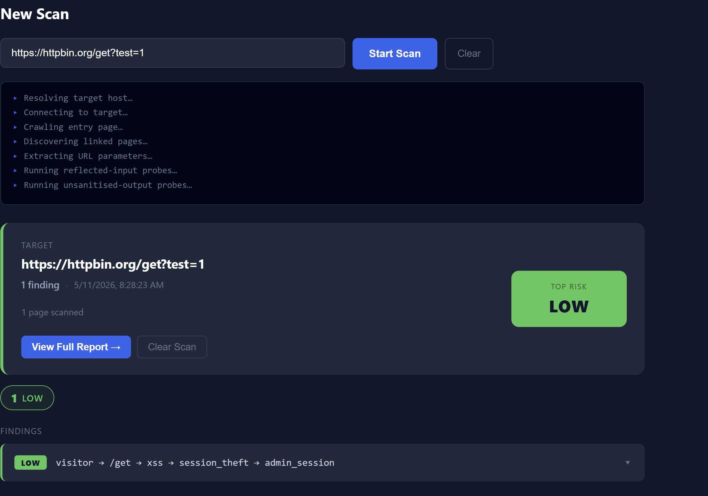
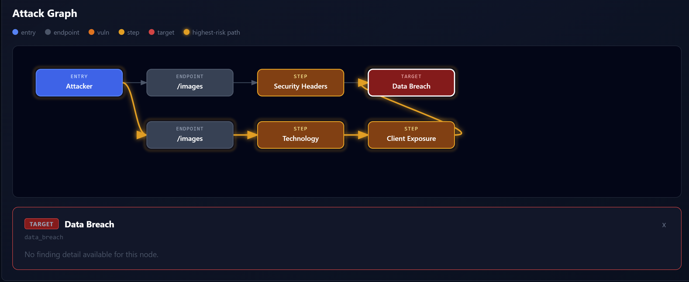

Project Overview
Hercules is a cybersecurity SaaS platform that I am building to move beyond a simple vulnerability-scanning script and toward a complete security assessment product.
The platform is designed for authorized security testing, allowing users to configure assessments against websites they own or have permission to test.
The system combines a web application, backend APIs, scanning functionality, authentication, databases and security reporting into a single platform.
My goal is to make complex security findings easier to understand by connecting technical vulnerability information with risk explanations and practical remediation guidance.
What I Built
Security Scanning
Built scanning functionality for assessing authorized web targets and identifying potential security issues.
Authentication
Implemented user authentication and account-related functionality as part of the SaaS platform architecture.
Target Management
Designed functionality for managing security assessment targets and verifying targets before scanning.
Scan Management
Built functionality around launching, monitoring, cancelling and reviewing security scans.
Risk Analysis
Developed functionality for analysing discovered issues and presenting their security significance.
Security Reporting
Designed structured reporting so that security findings can be presented in a more understandable and actionable format.
Technical Challenges
One of the biggest challenges with Hercules has been moving from a standalone security scanner toward a multi-component software platform.
The project requires different parts of the system to work together, including the frontend, backend APIs, scanning engine, database, authentication and reporting functionality.
This has required me to think about API design, application architecture, asynchronous operations, database management, authentication and how security results should move through the system.
What I'm Learning
Hercules has pushed me beyond building isolated scripts and into thinking about how complete software products are designed and maintained.
Through the project I am gaining practical experience with backend development, APIs, databases, authentication, frontend development, cybersecurity concepts and software architecture.
It is also teaching me how to balance technical security requirements with usability and how to communicate complex security findings to users.
Project Gallery
